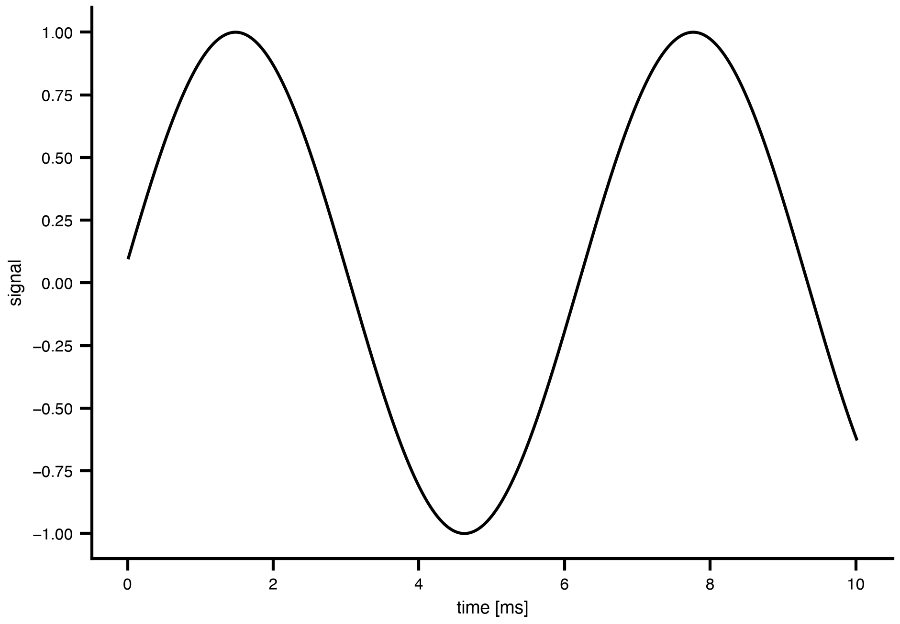
Introduction to TVB modeling framework and The Virtual Brain Ontology for reproducible and comparable computational modeling
Summer School 2026
Leon Martin
June 16, 2026
Overview:
- Intro to Brain Network Modelling — connectomes, local dynamics, coupling
- Defining a FAIR Brain Network Model — ontology-backed specs with TVB-O
- Setup & First Examples — a runnable environment
- Bifurcation Analysis — reading the dynamics as a map of regimes
- Stimulating the Brain — evoked responses & parameter inference
1. Intro to Brain Network Modelling
Intro to Brain Network Modelling
Why network models? Same lesion, different outcomes
- Two patients, similar lesion location and volume
- Different deficits, different recovery trajectories
- The locus alone doesn’t predict outcome
- Function lives in the network: regional damage propagates through the connections that survive
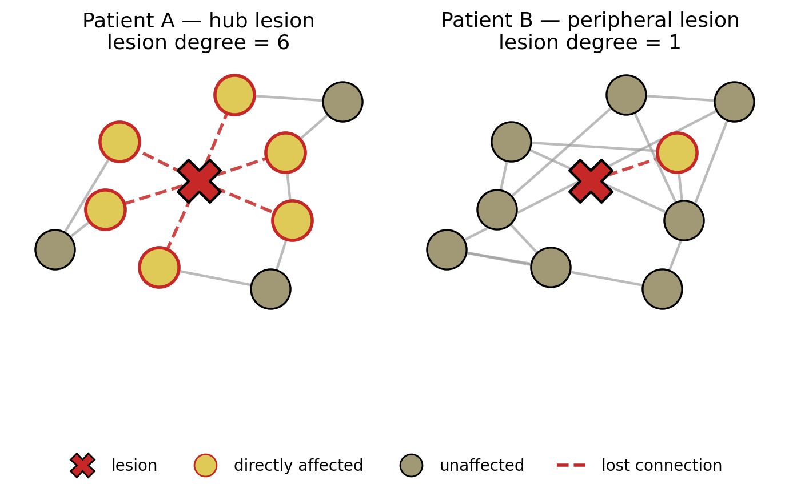
To predict outcome, model the whole network, not a catalogue of regions.
Why dynamics? The brain is never idle
- At rest, the brain shows structured spontaneous activity, not noise
- Resting-state networks are reproducible across subjects and species
- Tasks are perturbations of this ongoing dynamical state
- Like a tennis player at the baseline: never still, poised for the next service
A model has to reproduce the resting repertoire, not only stimulus responses.
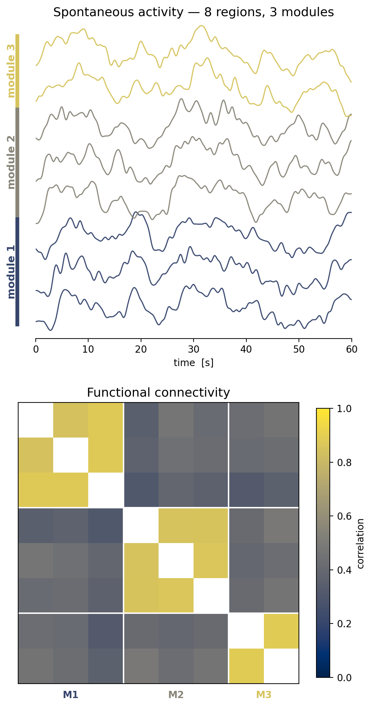
Outputs match what we measure
- TVB outputs what scanners record: EEG · MEG · SEEG · fMRI BOLD
- Each modality is a forward model (\(h\)) on the same simulated state
- Timescales come for free, EEG/SEEG in ms, BOLD in seconds
Direct comparison with data, no translation gap.
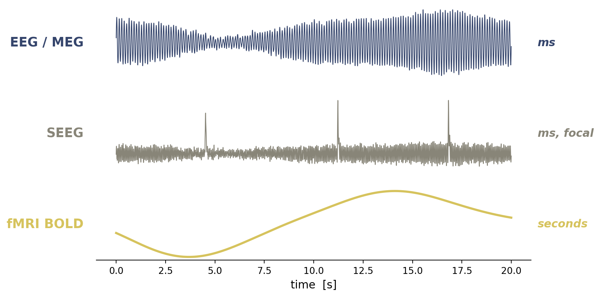
A short history of TVB
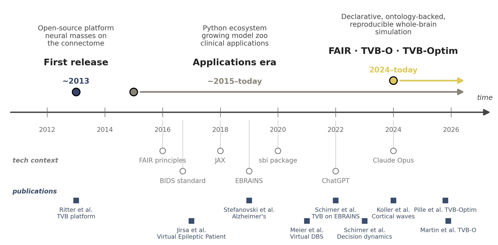
From scans to a simulator: the TVB recipe
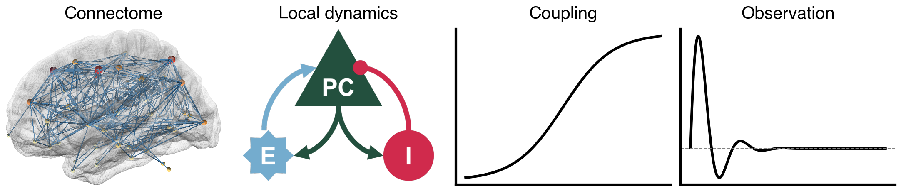
| Ingredient | Symbol | Source |
|---|---|---|
| Connectome (weights, delays) | \(A_{ij},\ \tau_{ij}\) | DTI / tractography |
| Local dynamics | \(f\) | Neural mass / mean-field model |
| Coupling | \(g\) | Network propagation, with delays |
| Observation | \(h\) | BOLD / EEG / MEG forward model |
The next slides unpack each building block.
Building Block 1: The Connectome
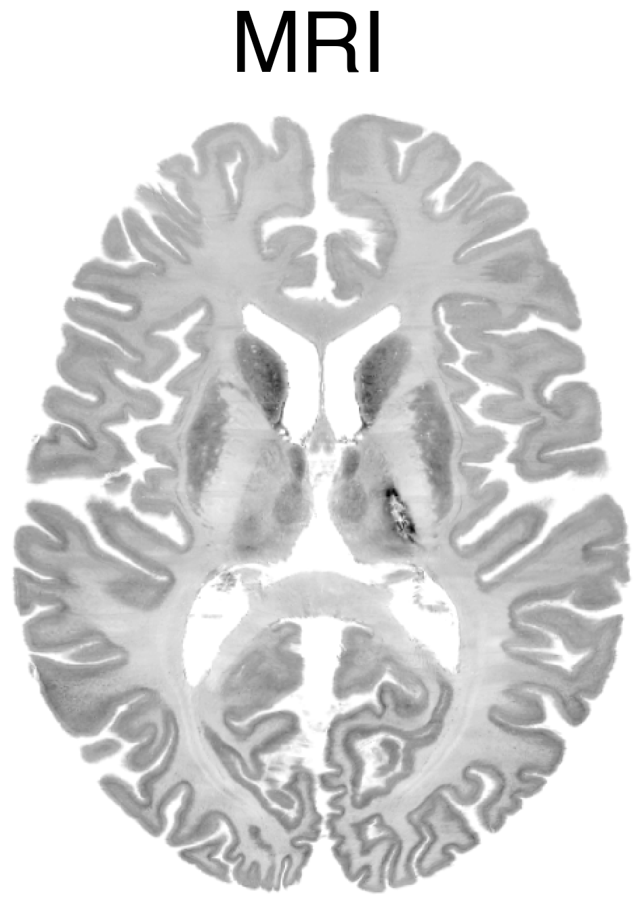

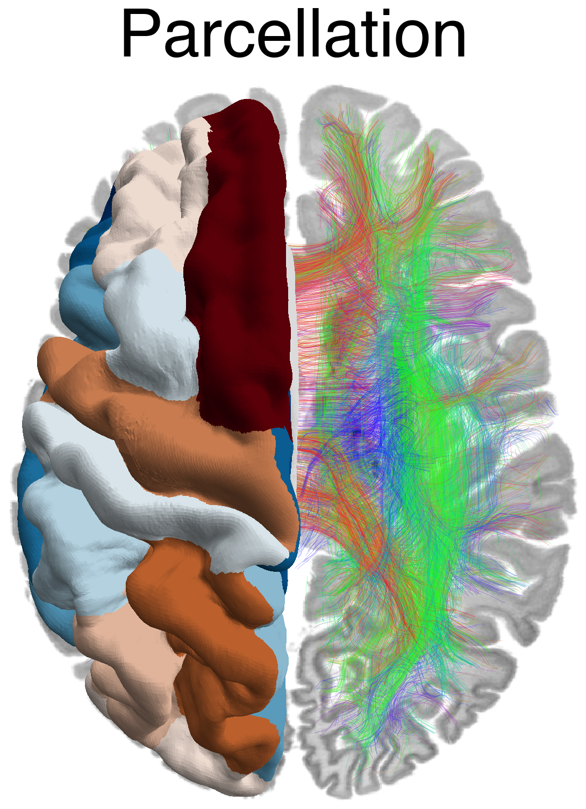

Diffusion MRI → tractography → parcellation → connectivity matrix. The output is the structural backbone \(A_{ij}\) (weights) and \(\tau_{ij}\) (delays).
Building Block 2: Dynamical Systems
A mass \(m\) on a spring with stiffness \(k\).
Perpetual oscillation at \(\omega = \sqrt{k/m}\).
State Equations: \[ \dot{x} = v \] \[ \dot{v} = - \frac{k}{m}*x \]
State Variables
| Variable | Initial Value | Unit | Description |
|---|---|---|---|
| \(x\) | 2.0 | \(\mathrm{m}\) | Displacement from equilibrium |
| \(v\) | 0.0 | \(\frac{\mathrm{m}}{\mathrm{s}}\) | Velocity |
Parameters
| Parameter | Value | Unit | Description |
|---|---|---|---|
| \(k\) | 0.0001 | \(\frac{\mathrm{N}}{\mathrm{m}}\) | Spring stiffness constant |
| \(m\) | 1.0 | \(\mathrm{kg}\) | Mass of the oscillating body |
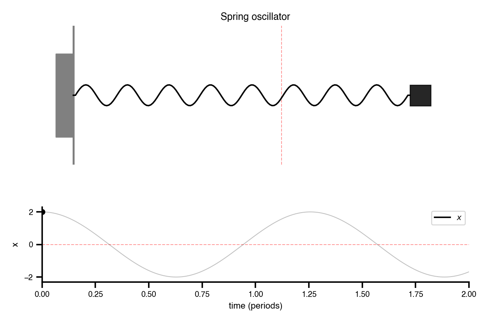
Initial Conditions
Same spring-mass system as before.
What changes?
- Initial displacement only: \(x_0 \in \{-1,-2,-3\}\)
- Velocity stays fixed at \(v_0 = 0\)
- Parameters stay fixed: \(k=10^{-4},\; m=1\)
What do we see?
- Same frequency in all cases
- Larger initial stretch gives larger amplitude
- Closed motion stays perfectly periodic
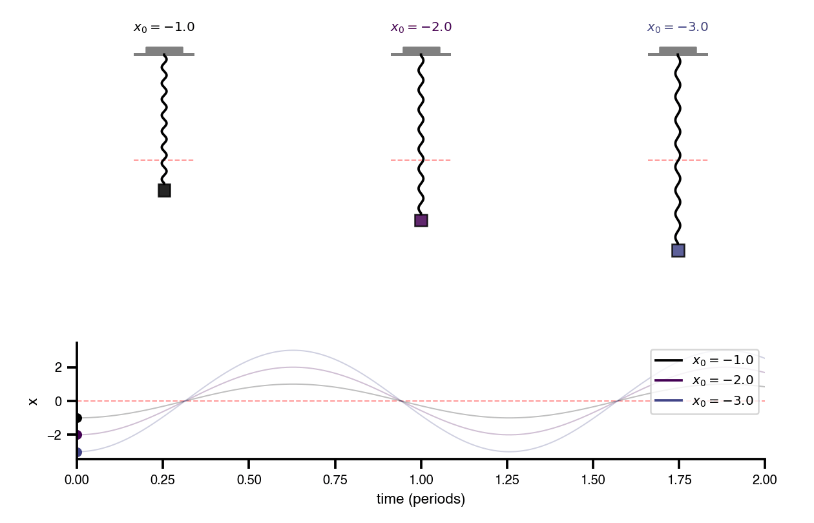
Phase Space
Same spring-mass system. Only the representation changes.
What changes?
- Plot state as \((x,v)\) instead of \(x(t)\)
- Use several initial conditions
- Add the vector field of the dynamics
What do we see?
- Closed trajectories around equilibrium
- Conservative dynamics with no damping
- Geometry of the flow instead of time evolution

Parameters — Mass
Same equations and same initial condition. Only the mass changes.
What changes?
- \(m \in \{0.5, 1.0, 2.0\}\)
- \(x_0=-2\), \(v_0=0\) stay fixed
- \(k\) stays fixed
What do we see?
- Frequency follows \(\omega = \sqrt{k/m}\)
- Heavier masses oscillate more slowly
- Box size encodes the mass value visually
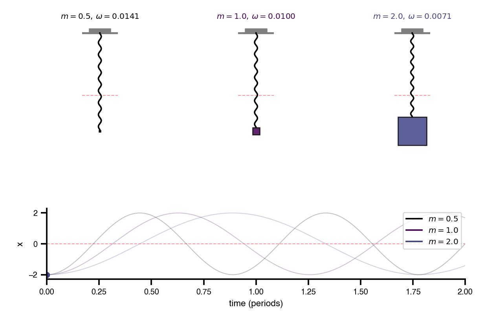
Towards Realism — Damping & Load
Now we modify the toy model toward a more realistic oscillator.
What changes?
\[ \dot{v} = -\frac{k}{m}x - \frac{c}{m}v + g_{\mathrm{eff}} \]
- Add damping: \(c=0.006\)
- Add constant load: \(g_{\mathrm{eff}}=0.00015\)
What do we see?
- Oscillations decay over time
- Equilibrium shifts away from zero
- Compare ideal toy model vs damped + load
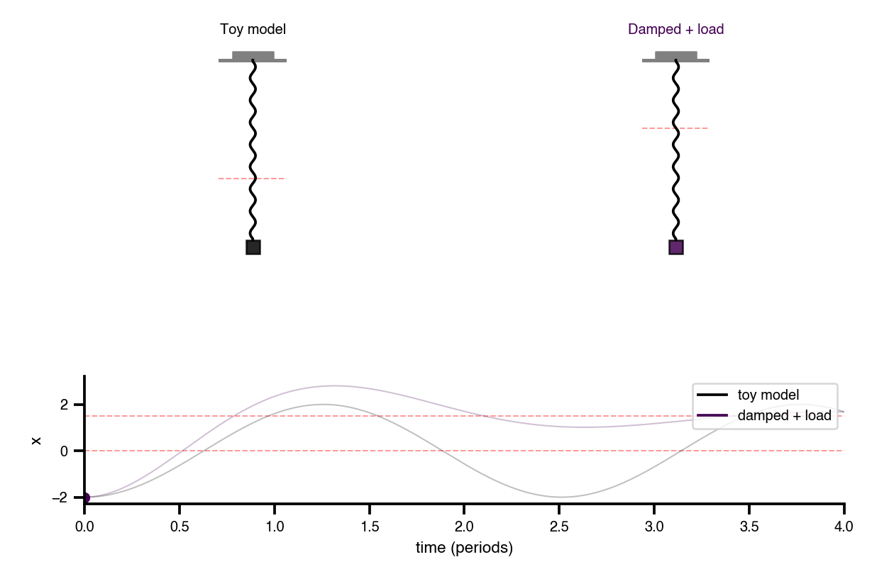
Phase Space: Damped Spring
Spring Oscillator
Damped Spring 
Towards Brain Dynamics: Mean Field Models
Mean field models & Neural Masses
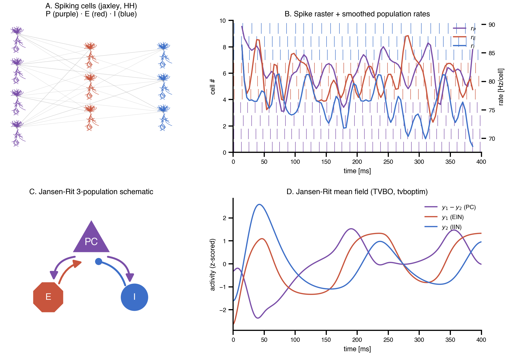
- Population rate: \(r(t) = \langle \#\text{spikes}\rangle / (N\,\Delta t)\)
- Jansen-Rit (3 populations): PC = \(y_1 - y_2\), the EEG-like PSP at pyramidal cells
EEG-Like Activity with the Jansen-Rit-Model
Jansen and Rit (1995) Lumped-parameter cortical column model with three neural populations: pyramidal cells, excitatory interneurons, and inhibitory interneurons. Each population is modeled by a PSP block (2nd-order linear filter) and a sigmoidal potential-to-firing-rate transformation.
Derived Variables \[ v_{pyr} = y_{1} - y_{2} \]
State Equations \[ \dot{y_{0}} = y_{3} \] \[ \dot{y_{3}} = - y_{0}*a^{2} - 2*a*y_{3} + A*a*\operatorname{Sigm}{\left(y_{1} - y_{2} \right)} \] \[ \dot{y_{1}} = y_{4} \] \[ \dot{y_{4}} = - y_{1}*a^{2} - 2*a*y_{4} + A*a*\left(p + C_{2}*\operatorname{Sigm}{\left(C_{1}*y_{0} \right)} + K*c_{intercolumn}\right) \] \[ \dot{y_{2}} = y_{5} \] \[ \dot{y_{5}} = - y_{2}*b^{2} - 2*b*y_{5} + B*C_{4}*b*\operatorname{Sigm}{\left(C_{3}*y_{0} \right)} \]
with \[ \operatorname{Sigm}{\left(v \right)} = \frac{2*e_{0}}{1 + e^{r*\left(v_{0} - v\right)}} \]
State Variables
| Variable | Initial Value | Unit | Description |
|---|---|---|---|
| \(y_{0}\) | 0.1 | \(\mathrm{mV}\) | |
| \(y_{3}\) | 0.1 | \(\frac{\mathrm{mV}}{\mathrm{s}}\) | |
| \(y_{1}\) | 0.1 | \(\mathrm{mV}\) | |
| \(y_{4}\) | 0.1 | \(\frac{\mathrm{mV}}{\mathrm{s}}\) | |
| \(y_{2}\) | 0.1 | \(\mathrm{mV}\) | |
| \(y_{5}\) | 0.1 | \(\frac{\mathrm{mV}}{\mathrm{s}}\) |
Parameters
| Parameter | Value | Unit | Description |
|---|---|---|---|
| \(A\) | 3.25 | \(\mathrm{mV}\) | Maximum amplitude of excitatory PSP (EPSP) |
| \(B\) | 22 | \(\mathrm{mV}\) | Maximum amplitude of inhibitory PSP (IPSP) |
| \(C\) | 135 | — | Lumped connectivity constant (C = C1) |
| \(a\) | 100 | \(\mathrm{s}^{-1}\) | Reciprocal of EPSP time constant |
| \(b\) | 50 | \(\mathrm{s}^{-1}\) | Reciprocal of IPSP time constant |
| \(v_{0}\) | 6 | \(\mathrm{mV}\) | PSP for 50% firing rate (sigmoid midpoint) |
| \(e_{0}\) | 2.5 | \(\mathrm{s}^{-1}\) | Half of maximum firing rate |
| \(r\) | 0.56 | \(\mathrm{mV}^{-1}\) | Steepness of sigmoid transformation |
| \(p\) | 220 | \(\mathrm{s}^{-1}\) | Mean external input (afferent pulse density) |
| \(K\) | 0 | — | Per-node coupling strength scaling (K[i] scales coupling received by node i) |
Derived Parameters
\[ C_{1} = C \] \[ C_{2} = 0.8*C \] \[ C_{3} = 0.25*C \] \[ C_{4} = 0.25*C \]
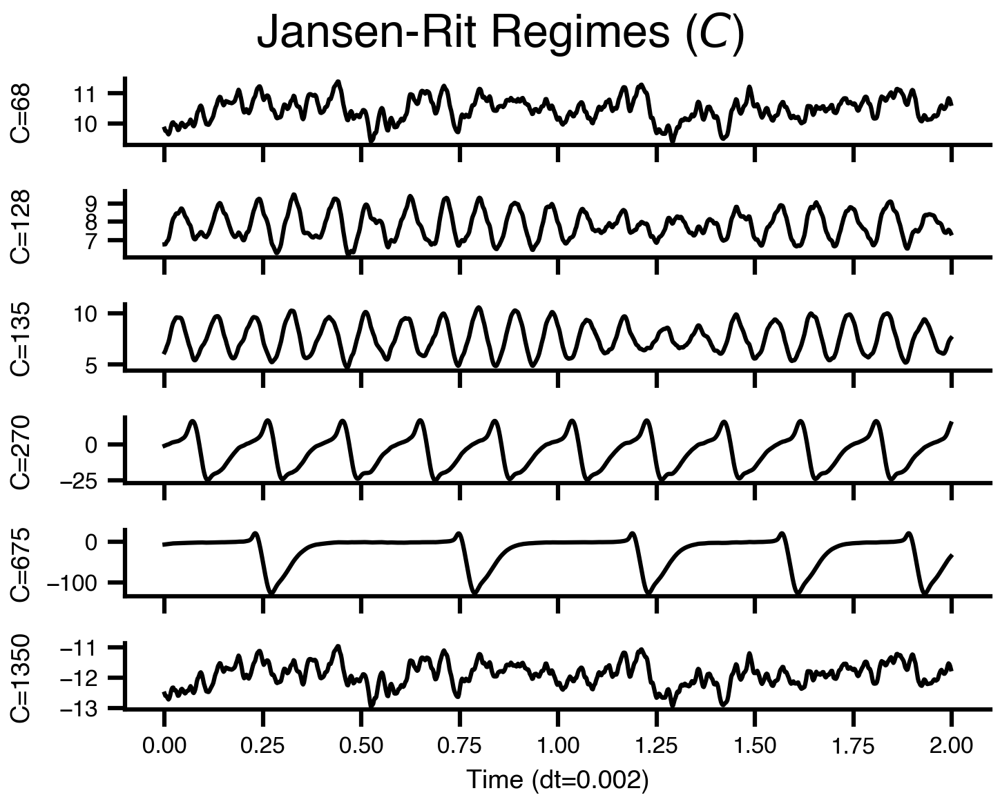
Building Block 3: Coupling → Network Dynamics
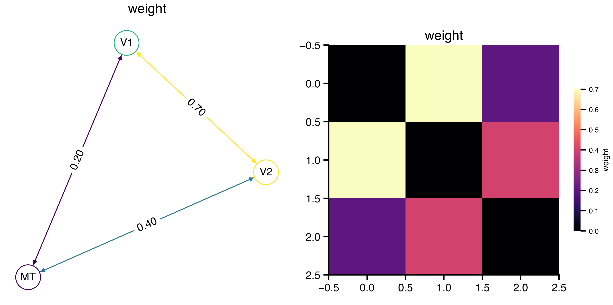
Uncoupled system
Kuramoto (1975)
Phase oscillator model. Each node evolves with its own natural frequency \(\omega\); coupling \(I\) is added by the network.
State Equations \[\dot{\theta} = \omega\]
State Variables
| Variable | Initial value | Unit |
|---|---|---|
| \(\theta\) | \(\sim\mathcal{U}(0,2\pi)\) | — |
Derived Variables \[activity = \sin(\theta)\]
Parameters
| Parameter | Value | Unit | Description |
|---|---|---|---|
| \(\omega\) | 1.0 | — | Natural frequency |
Simulation settings
| Duration | 100 s |
| Step size | 0.01 s |
| Integrator | Heun |
| Nodes | 3 (V1, V2, MT) |
| Coupling \(K\) | 0.0 (uncoupled) |
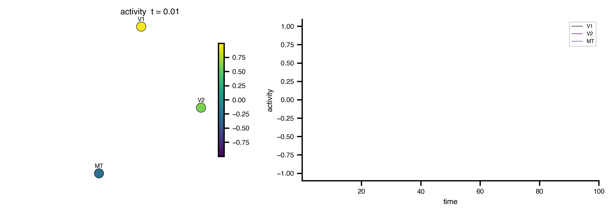
Coupled system
Kuramoto (1975) — same model as before, now with coupling enabled.
State Equations \[\dot{\theta} = I + \omega\]
Coupling: \(I\)
\[ I = \frac{K \sum_{j=0}^{-1 + N} - {g}_{i,j} \sin{\left(\theta_{i} - \theta_{j} \right)}}{3} \]
Receives \(\theta\) from connected regions.
Pre-synaptic: \(c_{\text{pre}} = \sin(\theta_j - \theta_i)\)
Post-synaptic: \(c_{\text{post}} = \dfrac{K \cdot gx}{3}\)
Coupling parameters
| Parameter | Value | Description |
|---|---|---|
| \(K\) | 0.4 | Global coupling strength |
Network
| Edge | Weight |
|---|---|
| V1 → V2 | 0.7 |
| V2 → MT | 0.4 |
| V1 → MT | 0.2 |
Simulation settings
| Duration | 100 s |
| Step size | 0.01 s |
| Integrator | Heun |
Mathematical framework
\[dS_i = \left[f_d(S_i, \theta^d, C_i, I_i) \right]dt + g(S_i, \theta^g)\, dW_i\]
State Evolution
- \(S_i\) - state variables at node \(i\)
- \(f_d\) - dynamics function with parameters \(\theta^d\)
- \(C_i\) - coupling input from connected nodes
- \(I_i\) - external input (stimulation, driving signals)
- \(g\) - noise diffusion coefficient with parameters \(\theta^g\)
- \(dW_i\) - Wiener process (stochastic fluctuations)
Coupled Brain Network
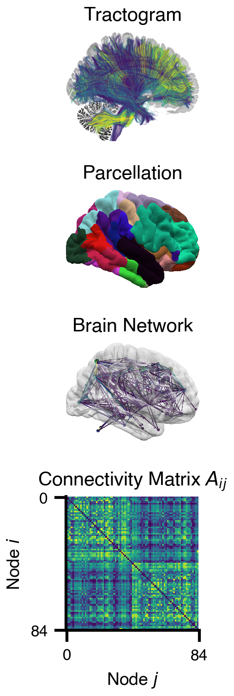
\[ C_i = f_c^{\text{post}}\Big(\sum_j A_{ij}\, f_c^{\text{pre}}(S_i, S_j(t-\tau_{ij}), \theta^c), S_i, \theta^c\Big) \]
Coupling
- \(f_c^{\text{pre}}\) - pre-aggregation transformation
- \(A_{ij}\) - structural connectivity weight (\(j \to i\))
- \(\tau_{ij}\) - transmission delay (tract length / conduction speed)
- \(f_c^{\text{post}}\) - post-aggregation transformation
- \(\theta^c\) - coupling parameters
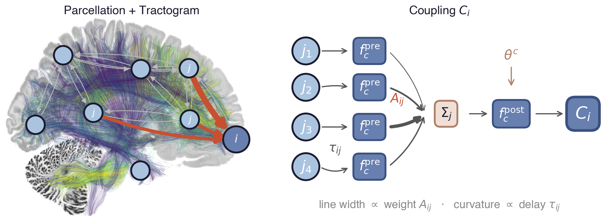
2. Defining a FAIR Brain Network Model
FAIR Guiding Principles
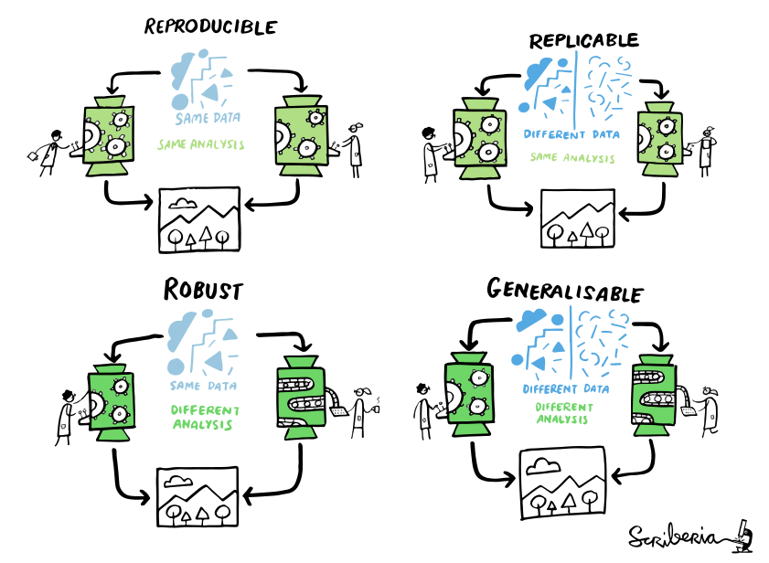
FAIR Principles

A Simulation Experiment in Computational Neuroscience

A Simulation Experiment in Computational Neuroscience
SimulationExperiment
Network
Parcellation
⟶
Node
⟶
Edge
Dynamics
StateVariable
Parameter
Equation
DerivedVariable
DerivedParameter
Function
Coupling
Parameter
Equation
IncomingState
LocalState
Integration
Method
Noise
InitialCondition
TimeSeries
Event
Equation
Target
Stimulus
Waveform
Observation
Source
Pipeline
⟶
DataSource
DerivedObs.
Exploration
Exploration
Algorithm
Analysis
Optimization
Continuation
Environment
SoftwareEnv.
Execution
Reference
Author
The Virtual Brain Ontology (TVB-O)
A brain network model usually lives in a methods section — prose you can read but rarely re-run. TVB-O makes the model itself a FAIR, machine-readable artifact:
- Common vocabulary — ontology-backed terms with persistent identifiers (
w3id.org/tvbo); no more ambiguous symbols across papers - Machine-readable metadata — a compact YAML schema captures everything needed to reproduce a simulation
- Curated database — published models, connectomes and study configurations, ready to load and run
- Code generation — one specification → executable code for TVB, JAX, Julia, …
Model Specification with TVB-O
Metadata Schema
id: 21
model: Dynamics
dynamics:
name: Dynamics
parameters:
a:
name: a
value: 1.0
state_variables:
x:
name: x
equation:
rhs: a*x
initial_value: 1.0
integration:
method: Heun
time_scale: ms
duration: 4.0
step_size: 0.01
explorations:
name: a_sweep
space:
- parameter: a
explored_values:
- 1.0
- 0.0
- -1.0Python API
from tvbo import DynamicalSystem, SimulationExperiment
from tvbo.datamodel.schema import Exploration, ExplorationAxis
bsplot.style.use("tvbo")
g = DynamicalSystem(
state_variables={"x": {
"equation": {"rhs": "a*x"},
"initial_value": 1.0}},
parameters={"a": {"value": 1.0}},
)
exp = SimulationExperiment(dynamics=g)
exp.explorations = Exploration(
name="a_sweep",
space=ExplorationAxis(
parameter="a",
explored_values=[1.0, 0, -1.0]
),
)
exp.integration.duration = 4.0
exp.integration.step_size = 0.01
res = exp.run("tvboptim")Specifying an experiment with TVB-O
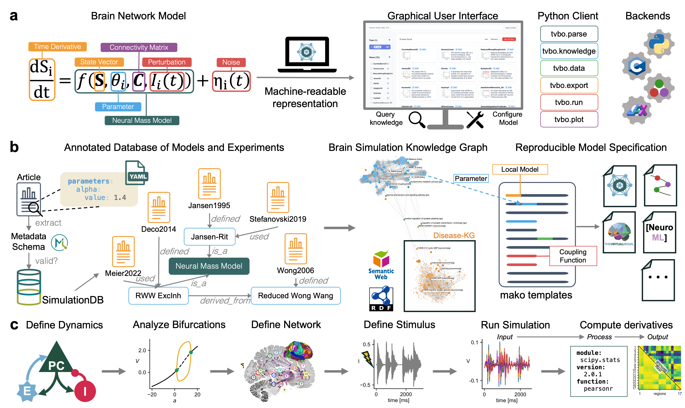
Build an experiment in the browser
No code — assemble a model, connectome and stimulus, then run it. The platform writes the reproducible specification for you.
…or run it in Python
The very same specification, driven from a notebook — for scripting, parameter sweeps and pipelines.
…or explore the ontology and simulate in JupyterLab
tvb-ext-ontology turns the ontology into an interactive graph. Start from a disease — search Schizophrenia, follow it to a study that modelled it and the neural-mass model that study used, add that model to a workspace, pick a connectome — then Run Simulation, without ever leaving JupyterLab.
Try TVB-O yourself
Three front-ends, one specification — scan to open.
Python package · pip install tvbo
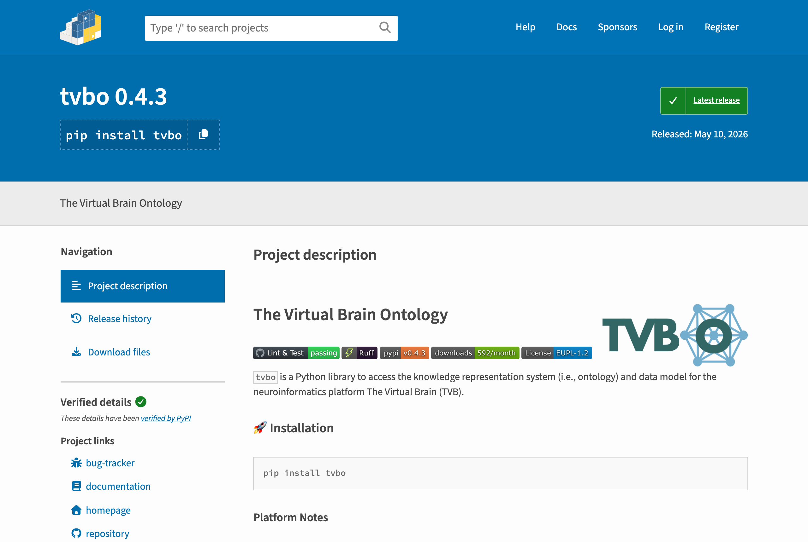
JupyterLab extension · pip install tvb-ext-ontology
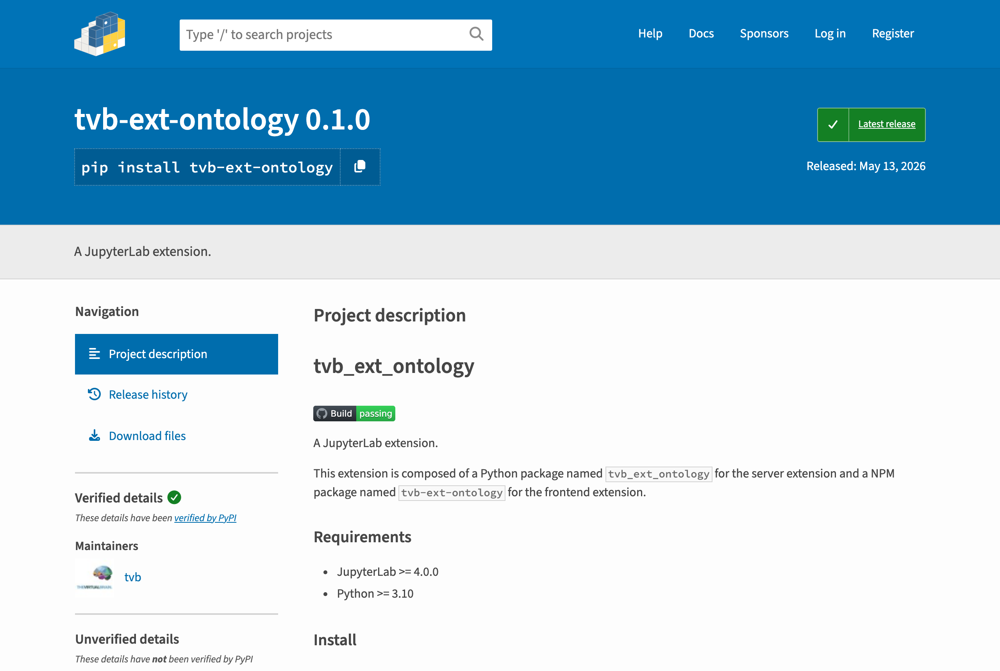
In short
A brain network model is local dynamics on a structural connectome, observed through a forward model.
- Regions carry neural-mass dynamics — the local node model
- Wired by the connectome — weights and conduction delays
- A forward model maps activity to BOLD, EEG, MEG
TVB-O isn’t a piece of software — it’s a whole framework that harmonizes how such models are specified, so any of them stays shareable and re-runnable.
Applications in basic research
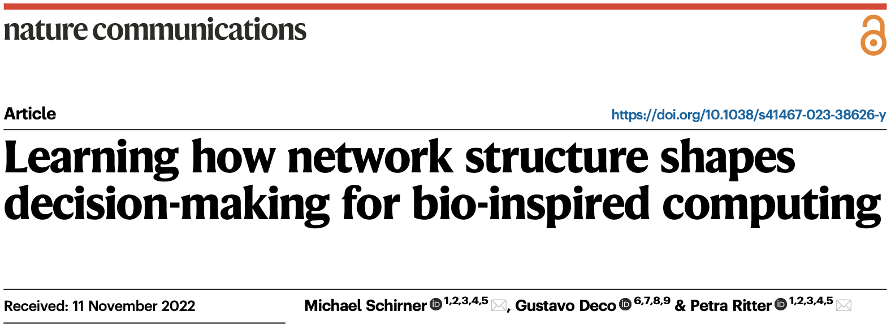
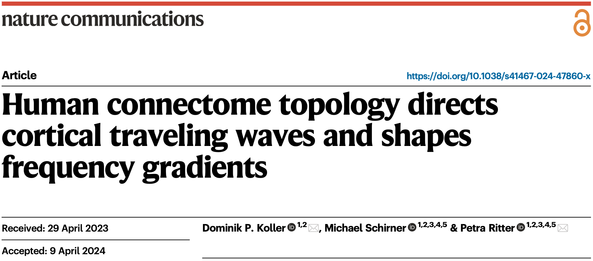
4. Clinical Applications
From mechanism to the clinic
Brain disorders are disorders of brain dynamics. A personalized virtual brain turns a patient’s scans into a working model — to expose a mechanism we cannot measure, and to rehearse a treatment before it reaches the patient.
The clinical landscape — ICD-11 areas → node dynamical models

Epilepsy — the Virtual Epileptic Patient
ICD-11 8A6Z · MeSH Epilepsy · 12 dynamical-model applications
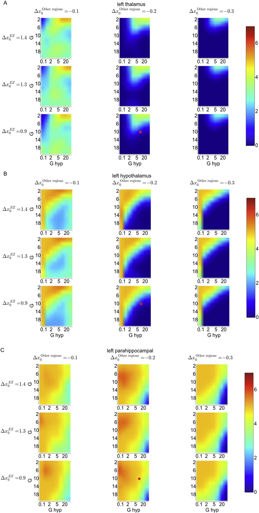
Jirsa 2017 · Epileptor
Builds the individualized Virtual Epileptic Patient from patient SEEG to inform therapy (Jirsa et al. 2016)
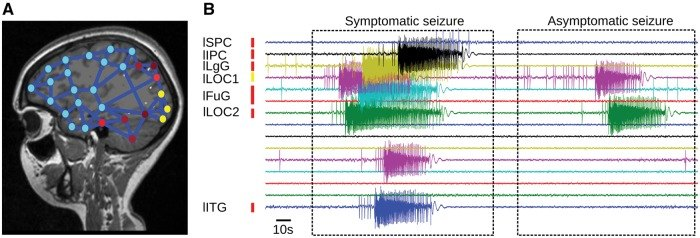
Proix 2017 · Epileptor
Patient-specific virtual brain models from diffusion MRI predict individual seizure propagation and post-surgical variability (Proix et al. 2017)
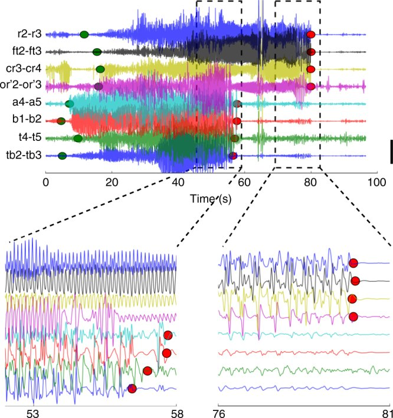
Proix 2018 · Epileptor
A neural-field model of wave propagation + coupled oscillators explains seizure spread/termination, validated on patients (Proix et al. 2018)
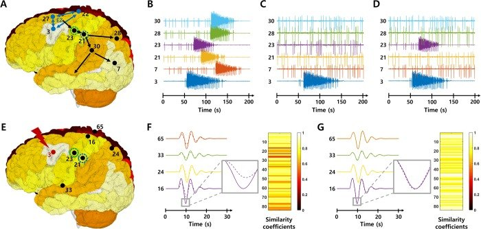
An 2019 · Epileptor
Patient-specific VEP models identify alternative resections outside the epileptogenic zone that spare eloquent cortex (An et al. 2019)
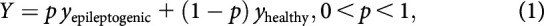
Courtiol 2020 · Epileptor
Whole-brain modeling reveals dynamical mechanisms of altered interictal resting-state connectivity in patients (Courtiol et al. 2020)
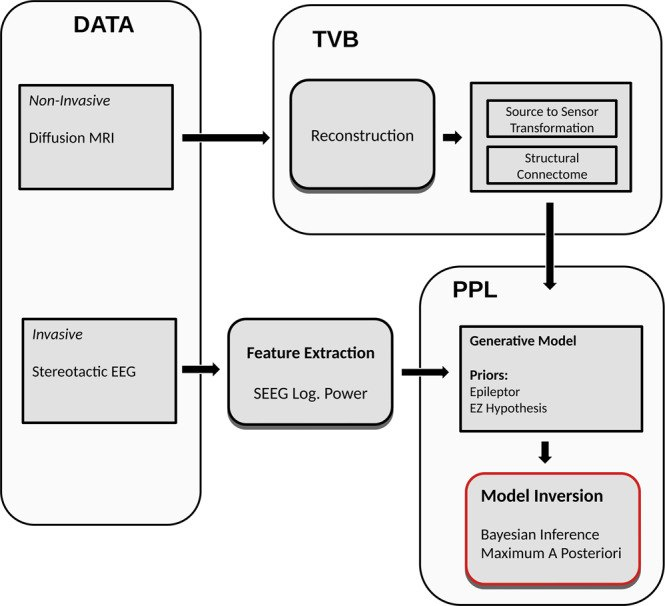
Vattikonda 2021 · Epileptor
Bayesian inference on a personalized brain network model identifies spatio-temporal seizure-propagation patterns (Vattikonda et al. 2021)
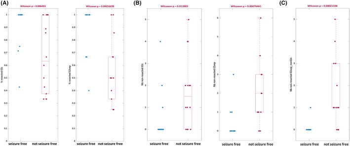
Makhalova 2022 · Epileptor
VEP brain modeling relates model parameters to seizure onset zones and surgical outcome (Makhalova et al. 2022)
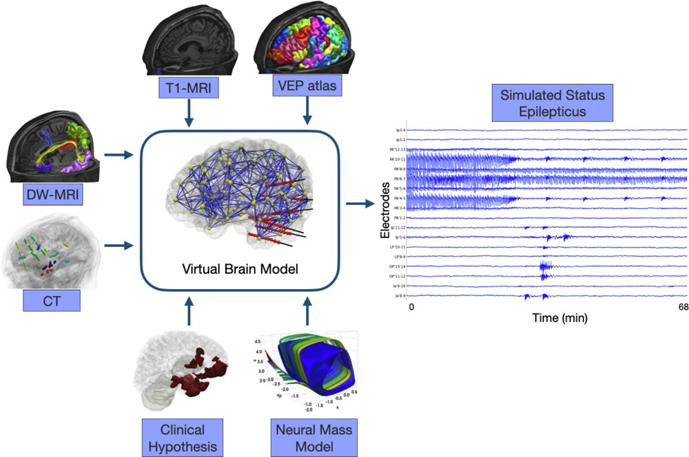
Dollomaja 2023 · Epileptor
Personalized whole-brain models investigate the dynamics and mechanisms of status epilepticus in patients (Dollomaja et al. 2023)
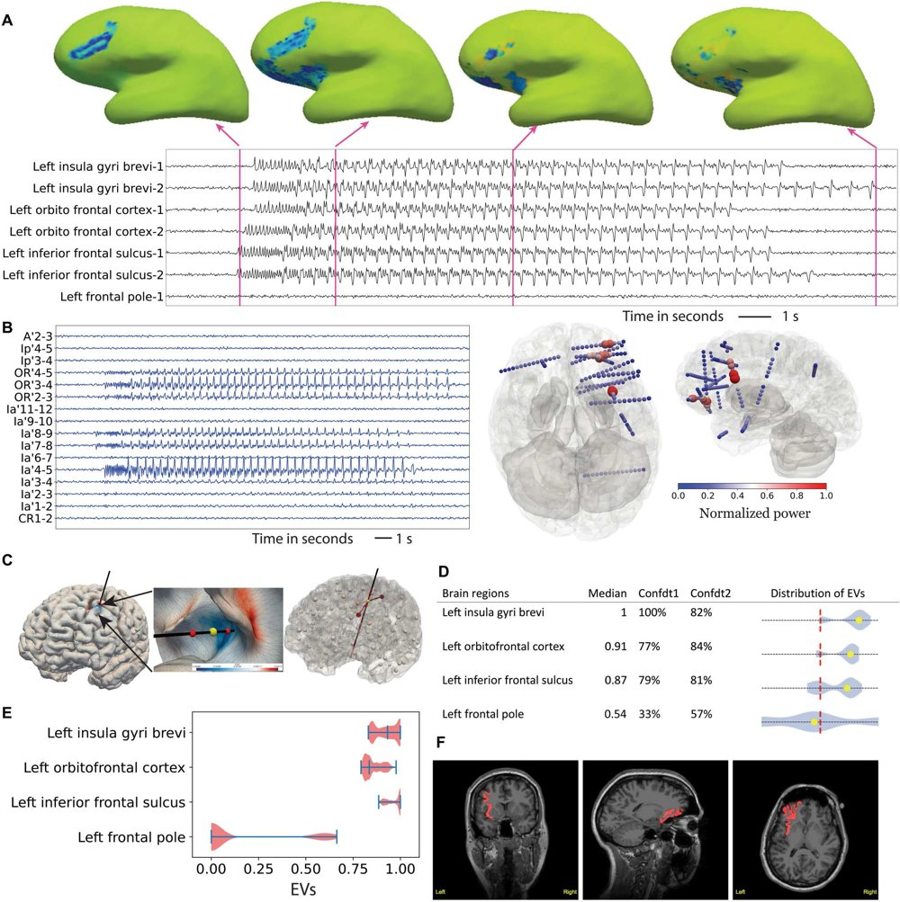
Wang 2023 · Epileptor
Personalized brain modeling with imaging data delineates epileptogenic networks in drug-resistant epilepsy (Wang et al. 2023)
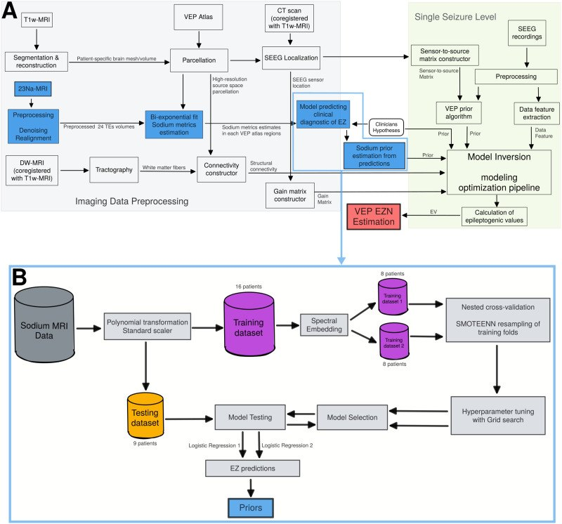
Azilinon 2024 · Epileptor
Brain sodium MRI-derived priors improve personalized model-based estimation of epileptogenic zones in epilepsy patients (Azilinon et al. 2024)
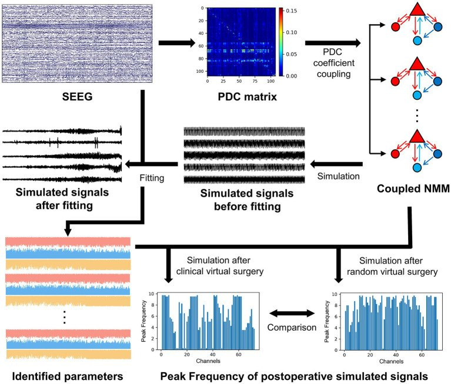
Cai 2024 · Wendling NMM
A functional coupled neural mass model predicts radiofrequency thermocoagulation surgical outcomes in refractory focal epilepsy (Cai et al. 2024)
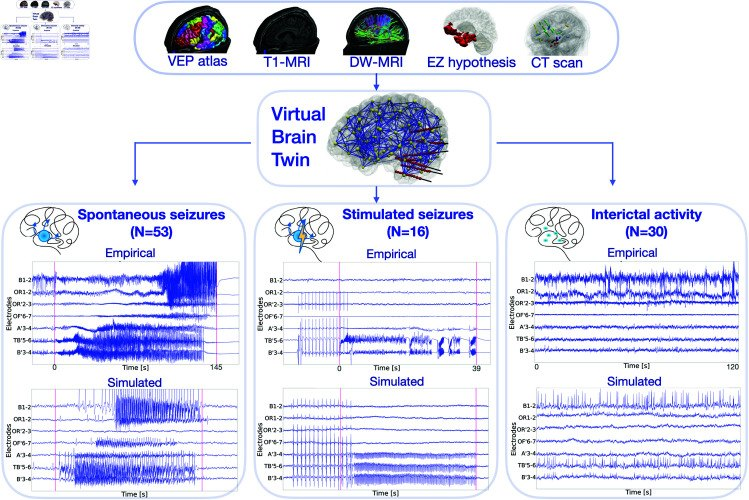
Dollomaja 2025 · Epileptor
Generates and evaluates a virtual epilepsy patient cohort using personalized whole-brain modeling (Dollomaja et al. 2025)
Alzheimer’s disease & dementia
ICD-11 8A20 · MeSH Alzheimer Disease · 12 dynamical-model applications
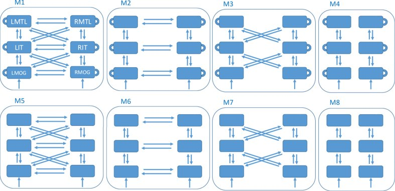
Penny 2018 · DCM (Jansen-Rit)
DCM characterizes effective-connectivity changes in preclinical autosomal-dominant AD (Penny et al. 2018)
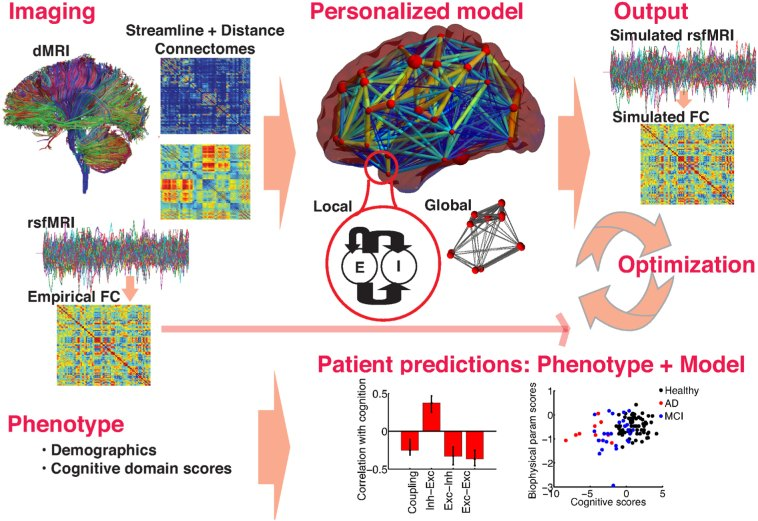
Zimmermann 2018 · Reduced Wong-Wang
Personalized Virtual Brain models of 124 individuals across the aging–MCI–AD spectrum predict cognition beyond the empirical connectome (Zimmermann et al. 2018)
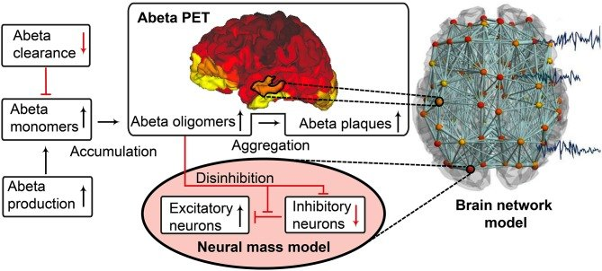
Stefanovski 2019 · Jansen-Rit
TVB links β-amyloid burden to EEG slowing and simulates memantine pharmacodynamics in virtual AD brains (Stefanovski et al. 2019)
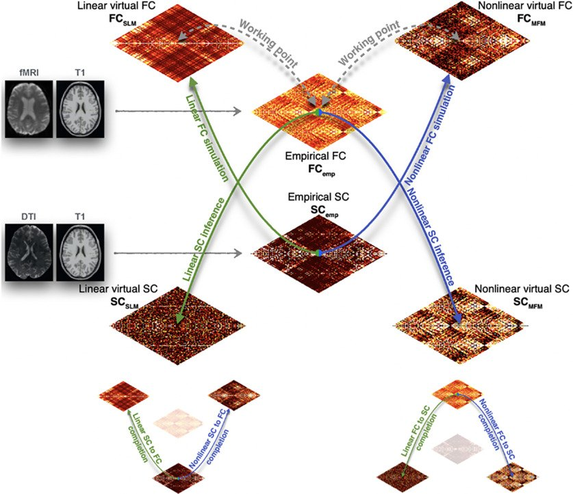
Arbabyazd 2021 · Reduced Wong-Wang
Generates virtual connectomic datasets in AD and aging via whole-brain network dynamics (Arbabyazd et al. 2021)
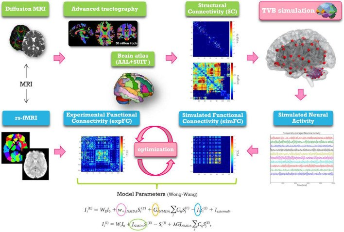
Monteverdi 2022 · Reduced Wong-Wang
Virtual brain modeling identifies subject-specific excitation/inhibition profiles in neurodegeneration (Monteverdi et al. 2022)
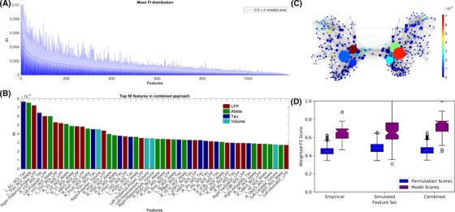
Triebkorn 2022 · Jansen-Rit
The Virtual Brain simulation features augment machine-learning classification of dementia patients (Triebkorn et al. 2022)
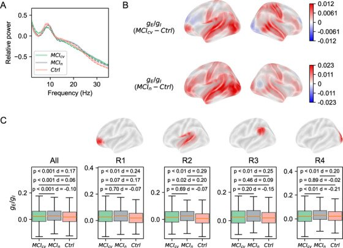
Martinez-Cañada 2023 · Spiking E/I network (LIF)
Aperiodic 1/f EEG/MEG slopes + brain simulation derive an excitation/inhibition imbalance marker in AD (Martínez-Cañada et al. 2023)
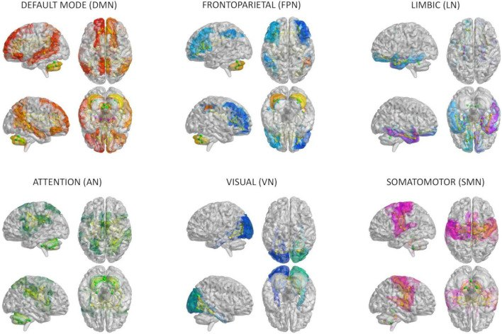
Monteverdi 2023 · Reduced Wong-Wang
Virtual brain simulations reveal network-specific parameters distinguishing neurodegenerative dementias (Monteverdi et al. 2023)
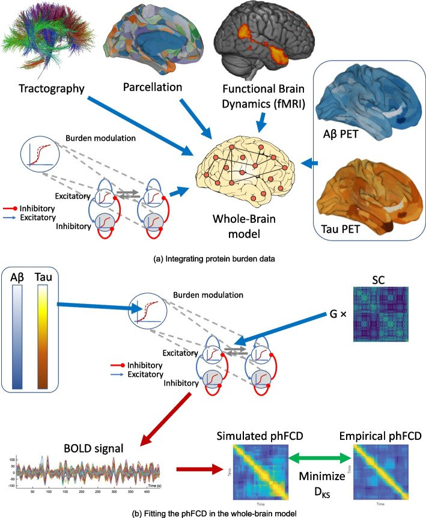
Patow 2023 · dynamic mean-field
A whole-brain dynamic model shows amyloid-β dominates early (MCI), tau dominates late, via altered E/I balance (Patow et al. 2023)
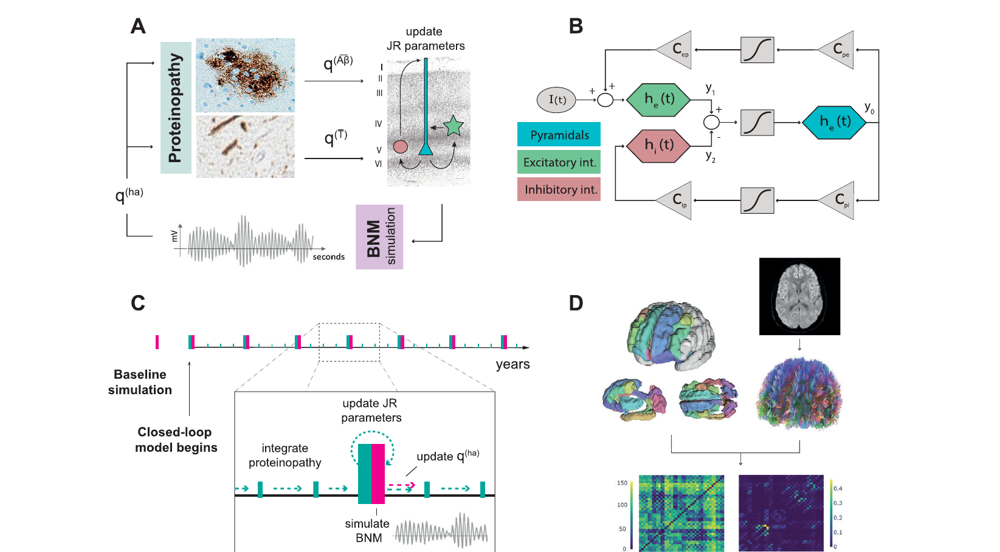
Cabrera-Álvarez 2024 · Jansen-Rit
Closed-loop heterodimer model couples Aβ/tau spread to a Jansen-Rit network; inhibition changes (mainly Aβ) drive AD functional-connectivity alterations (Cabrera-Álvarez et al. 2024)
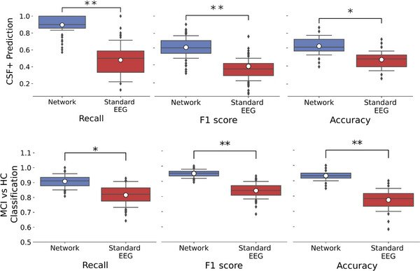
Amato 2024 · Jansen-Rit
Personalized brain modeling of AD progression estimates neurodegeneration severity from individual EEG (L. G. Amato et al. 2024)
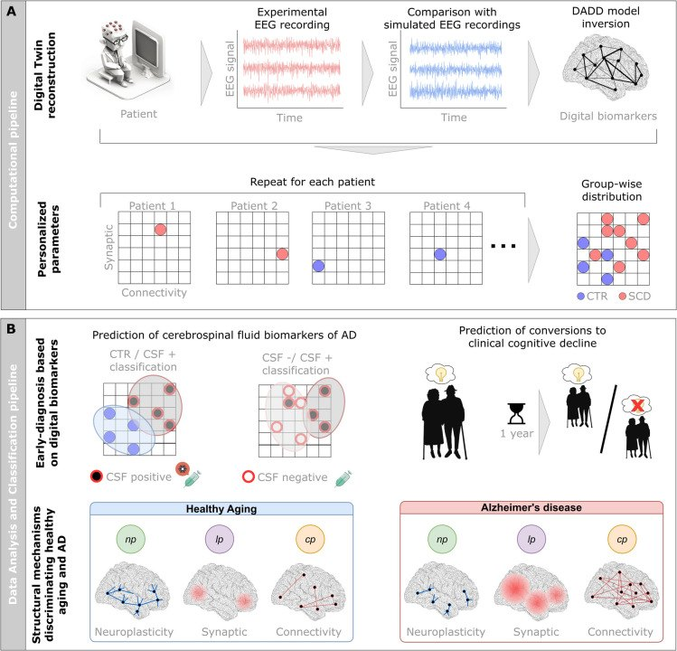
Amato 2025 · Jansen-Rit
Brain digital twins + non-invasive recordings enable early diagnosis of Alzheimer’s disease (L. Amato et al. 2025)
Schizophrenia
ICD-11 6A20 · MeSH Schizophrenia · 3 dynamical-model applications
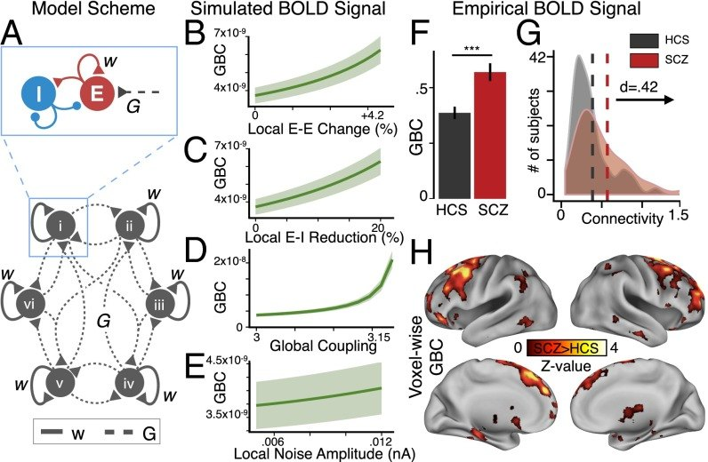
Yang 2015 · Reduced Wong-Wang
A cortical-hierarchy model (E/I gradient) explains preferential connectivity disturbances along the hierarchy in schizophrenia (Yang et al. 2015)
Adams 2022 · DCM canonical microcircuit
DCM of EEG+fMRI shows a consistent loss of pyramidal-cell synaptic gain in schizophrenia (Adams et al. 2022)
Mana 2023 · Hopf (Stuart-Landau)
An in silico whole-brain perturbational approach identifies critical brain areas in schizophrenia (Mana et al. 2023)
Parkinson’s disease
ICD-11 8A00.0 · MeSH Parkinson Disease · 4 dynamical-model applications
Maith 2020 · basal-ganglia model
A computational basal-ganglia model fit to Parkinson’s patients dissociates the dopamine-dependent pathway changes underlying altered reinforcement learning (Maith et al. 2020)
Jung 2022 · Jansen-Rit
Whole-brain dynamical modeling of individual connectomes classifies Parkinson’s patients (Jung et al. 2022)
Meier 2022 · mean-field + spiking BG
Virtual deep brain stimulation: multiscale co-simulation of a spiking basal-ganglia network with a whole-brain mean-field model in The Virtual Brain (J. M. Meier et al. 2022)
Angiolelli 2025 · Dody next-gen NMM
A dopamine-dependent whole-brain neural-mass model infers patient-specific dopaminergic tone from EEG/deep-electrode data, distinguishing ON vs OFF L-Dopa (Angiolelli et al. 2025)
Stroke
ICD-11 8B20 · MeSH Stroke · 2 dynamical-model applications
Falcon 2015 · Stefánescu-Jirsa 3D
The Virtual Brain models individual biological correlates of recovery after chronic stroke (Falcon et al. 2015)
Falcon 2016 · Stefánescu-Jirsa 3D
TVB modeling of 20 stroke patients links reduced conduction velocity and altered local dynamics/inhibition to motor recovery (Falcon et al. 2016)
Brain tumor / glioma
ICD-11 2A00.0 · MeSH Glioma · 2 dynamical-model applications
Aerts 2018 · Reduced Wong-Wang
Individually-optimized RWW parameters improve FC prediction and differentiate tumor-affected from healthy regions in 25 patients (Aerts et al. 2018)
Aerts 2020 · Reduced Wong-Wang
TVB virtual neurosurgery: model parameters are stable across resection and predict post-operative dynamics (Aerts et al. 2020)
Multiple sclerosis
ICD-11 8A40 · MeSH Multiple Sclerosis · 1 dynamical-model application
Martí-Juan 2023 · Reduced Wong-Wang
The Virtual Brain studies structure–function connectivity relationships in multiple-sclerosis patients across multiple centers (Martí-Juan et al. 2023)
Traumatic brain injury
ICD-11 NA07 · MeSH Brain Injuries, Traumatic · 1 dynamical-model application
Good 2022 · dynamic mean-field
Personalized connectome-based (TVB) modeling in semi-acute traumatic-brain-injury patients relates model parameters to acute imaging and 6-month outcomes (Good et al. 2022)
Disorders of consciousness
ICD-11 8E2Z · MeSH Consciousness Disorders · 1 dynamical-model application
Luppi 2022 · dynamic mean-field
Whole-brain modeling reveals distinct but convergent mechanistic paths to unconsciousness in anesthesia and disorders of consciousness (Luppi et al. 2022)
Depression
ICD-11 6A70 · MeSH Depressive Disorder, Major · 2 dynamical-model applications
An 2022 · Jansen-Rit
High-resolution virtual brain modeling personalizes deep brain stimulation for treatment-resistant depression via fiber-pathway stimulation responses (An et al. 2022)
Hofsähs 2026 · Jansen-Rit
The Virtual Brain links TMS-evoked potentials to inhibitory-neurotransmitter changes in major depressive disorder (Hofsähs et al. 2026)
Obsessive-compulsive disorder
ICD-11 6B20 · MeSH Obsessive-Compulsive Disorder · 1 dynamical-model application
Naze 2025 · Reduced Wong-Wang
Computational modeling of OCD patient data identifies frontostriatal-coupling interventions that improve function and predict symptom change (Naze et al. 2025)
The bottom line
1 recipe · 11 diseases · 41 model applications
Brain disorders are disorders of dynamics — a personalized virtual brain makes them measurable and treatable.
The approach has already reached the clinic — the Virtual Epileptic Patient is in clinical trials. So the question is no longer whether personalized brain models reach patients, but where next.
Deep brain stimulation
Target & settings in silico before surgery — Parkinson’s · depression · OCD (J. Meier et al. 2026)
Alzheimer’s
amyloid / tau → network failure → digital twin for early diagnosis
Mental disorders
model the mechanism — E/I balance, synaptic gain — not a label
One model that explains the symptom · predicts the course · rehearses the treatment
5. Bifurcation Analysis
How to analyse a brain system
Time series \(x(t)\) at fixed \((a, x_0)\)
Phase plane flow geometry at fixed \(a\)
Bifurcation diagram regimes as \(a\) varies
Linear Systems
\[ \dot x = a\,x \quad\Rightarrow\quad x(t) = x_0\,e^{a t} \]
- \(x(t)\): State variable
- \(x_0\): Initial condition
- \(a\): Parameter
Solution: \[ x(t) = x_0\,e^{a t} \]
Equilibrium: \[ \dot{x}(t) = ax(t) = 0? \] \[ \quad\Rightarrow\quad x_{eq} = 0 \]
2D portraits

Regime-change building blocks
- Top: equilibria as \(a\) varies.
- Bottom: local flow \(\dot x=f(x)\) at the dotted parameter slice.

Hopf: birth of an oscillation
\[ \dot z = (a + i\omega)z - |z|^2z, \qquad r_{\mathrm{cycle}} = \sqrt a \]

fixed point loses stability \(\Rightarrow\) stable oscillation appears
Dynamical Regimes
Numerical continuation

\[ F(x, a)=0, \qquad (x,a)=(x(s),a(s)) \]
- follow branches through folds
- detect folds and Hopf points
- switch to periodic orbits
TVB simulation infused with bifurcation analysis

TVBO + tvboptim simulation of Generic2dOscillator on the Desikan-Killiany network. Nodes are colored by their instantaneous \(V(t)\) and projected onto axial (top) and sagittal views; the regime map places each node at its current \((I_{\mathrm{eff}}, V)\) on the bifurcation diagram.
Bifurcation analysis: hands-on
- Notebook:
notebooks/4_BifurcationAnalysis/BifurcationAnalysis.qmd - Sweep input \(I\) in a TVB neural mass model
- Continue fixed points and periodic orbits
- Read the diagram as a map of regimes
7. Stimulating the Brain
Why stimulate a brain model?
- At rest the brain is a dynamical system poised near a regime boundary (Intro, Bifurcation)
- Tasks, sensory flashes, TMS, and DBS are all perturbations of that ongoing state
- A stimulus lets us probe the regime — does a nudge decay, or tip the system into a new behaviour?
- … reproduce evoked responses we record (EEG/MEG/SEEG)
- … and test interventions in silico before touching a patient
Stimulation is a time-dependent Event
In TVB-O a stimulus is an Event: a symbolic, time-dependent perturbation injected into the dynamics.
| field | meaning |
|---|---|
name |
identifier — and the model port it drives |
event_type |
"stimulus" for external input |
parameters |
named knobs (onset, width, amplitude, …) |
equation.rhs |
any expression in t and the parameters |
nodes / weights |
where it lands — which nodes, how strongly |
Because the signal is symbolic, the same object serializes to YAML, renders to every backend, and is fully FAIR — just like the model itself.
The recipe: define → inject → run
- Define the signal as an
Event— a shape in time - Inject it: register the event and add its variable to a state equation’s right-hand side
- Run and compare the resting vs. stimulated time series
We start with a single Generic-2d-Oscillator node — the same model whose bifurcation diagram we read in Bifurcation Analysis — then place it in a small network.
Step 0 — A baseline run
from tvbo import Dynamics, SimulationExperiment
from tvbo.datamodel.schema import Event
g2d = Dynamics.from_db("Generic2dOscillator")
exp = SimulationExperiment(dynamics=g2d)
res = exp.run()
res.integration.sel(variable="V").plot()With its database defaults (\(I = 0\)) the node relaxes onto a stable focus — far from any oscillation. This is our resting state.
Step 1 — Define the stimulus
A rectangular pulse, written as a Piecewise in t:
event = Event(
name="stim",
event_type="stimulus",
parameters={
"onset": {"value": 200.0},
"width": {"value": 200.0},
"amplitude": {"value": 5.0},
},
equation={"rhs":
"Piecewise((amplitude,"
" (t >= onset) & (t < onset + width)),"
" (0.0, True))"},
)
event.plot()Any expression in t and the event’s parameters is valid — a Gaussian, a ramp, or a sinusoid works the same way.
Step 2 — Expose a port, bind the event
The model author places a stimulation port stim (default 0) where input physically enters; the event binds to it by name.
from tvbo.datamodel.schema import Parameter
# the model exposes a stimulation port `stim`, defaulting to 0
g2d.parameters["stim"] = Parameter(name="stim", value=0.0)
g2d.state_variables["V"].equation.rhs = (
"d*tau*((I + stim)*gamma - V**3*f + V**2*e + V*g "
"+ V*local_coupling + W*alpha + c_glob*gamma)"
)
exp.events["stim"] = event # event.name == port symbol → boundThe port is authored once, at the right spot in the equation. With no event stim = 0 → the resting model; attaching the event drives it. The equations are never rewritten per experiment, and nothing is injected implicitly. (Jansen-Rit ships exactly such a port — P — see the use-case.)
Step 3 — Run: rest → stimulus → rest
While the pulse is on, it lifts the effective input \(I + \text{stim} = 5\) above the node’s Hopf bifurcation (\(\approx 3.5\)), into the limit-cycle envelope (right). A limit cycle is born for the pulse’s duration, then activity relaxes back to rest — the Hopf mechanism from Bifurcation Analysis, triggered on demand.
From one node to a network
Localize the stimulus to one node with nodes / weights:
event = Event(
name="stim", event_type="stimulus",
parameters={"onset": {"value": 80.0},
"duration": {"value": 5.0},
"amplitude": {"value": 5.0}},
equation={"rhs": "Piecewise((amplitude,"
" (t>=onset)&(t<onset+duration)),"
" (0.0, True))"},
nodes=[0], # stim at R0
weights=[1.0], # full strength
)
net = Network.from_string(motif_yaml)R0 → R1 (short 30 mm), R0 → R2 (long 200 mm) — delay = length / conduction_speed.

Conduction speed shapes propagation
res_fast = stimulate(speed=10) # fast conduction (10 mm/ms) → near-synchronous
res_slow = stimulate(speed=1) # slow conduction (1 mm/ms) → staggered arrivalSame localized pulse, same tracts — only conduction_speed changes. Fast: R1 and R2 respond almost together. Slow: the far node R2 (200 mm) lags the near node R1 (30 mm) by ≈ 170 ms — the network’s geometry written directly into the timing.
Secondary propagation: a 1 → 2 → 3 chain
- 1 → 2 → 3 · node 3 reached only via node 2 → secondary (poly-synaptic) propagation
- per hop: later \(t_k \approx t_0 + k\,\tau\) · weaker \(A_k \sim g^{\,k}\ (g<1)\)
- same weights & coupling as the conduction-speed demo
- → indirect routes in a full connectome
Use-case: Visual evoked potentials (Jansen and Rit 1995)
Original

Specification
- id: 6
label: "VEP: different columns, with delay
(Fig. 11)"
dynamics:
name: JansenRit1995_Delayed_VEP
parameters:
A: {value: 3.25, unit: mV}
B: {value: 22, unit: mV}
C: {value: 135}
a: {value: 100, unit: s^-1}
b: {value: 50, unit: s^-1}
v0: {value: 6, unit: mV}
e0: {value: 2.5, unit: s^-1}
r: {value: 0.56, unit: mV^-1}
p:
value: 220
unit: s^-1
shape: "(n_nodes,)"
distribution: *dist_p_uniform
a_d: {value: 30, unit: s^-1}
K: {value: 0, shape: "(n_nodes,)"}
derived_parameters: *jr_derived
functions: *jr_functions
coupling_terms: *jr_coupling
state_variables:
y0: {equation: {rhs: y3}}
y3:
equation:
rhs: >-
A*a*Sigm(y1 - y2)
- 2*a*y3 - a**2*y0
y1: {equation: {rhs: y4}}
y4:
equation:
rhs: >-
A*a*(p + P
+ C2*Sigm(C1*y0) + z0)
- 2*a*y4 - a**2*y1
y2: {equation: {rhs: y5}}
y5:
equation:
rhs: >-
B*b*(C4*Sigm(C3*y0))
- 2*b*y5 - b**2*y2
z0: {equation: {rhs: z1}}
z1:
equation:
rhs: >-
A*a_d*K*c_intercolumn
- 2*a_d*z1 - a_d**2*z0
derived_variables:
v_pyr: {equation: {rhs: y1 - y2}}
output: [v_pyr]
network:
number_of_regions: 2
number_of_nodes: 2
conduction_speed: {value: 0}
nodes:
- {id: 0}
- id: 1
parameters:
B: {value: 17.6}
C: {value: 108}
edges:
- source: 0
target: 1
directed: true
- source: 1
target: 0
directed: true
coupling: *sigmoidal_coupling
events: *flash_events
integration: *integration_vep
execution:
random_seed: 42
explorations:
VEP_delayed_fig11:
mode: zip
n_trials: 40
average: trials
parameters:
K:
element_domains:
- element: 0
explored_values: [300, 100]
- element: 1
explored_values: [1000, 4000]Reproduced
Use-case: real music reshapes whole-brain FC
A real recording (.wav → loudness envelope) is passed as a data file and injected at primary auditory cortex (DK transverse-temporal) of a Reduced-Wong-Wang + BOLD whole-brain model.
event = Event(
name="acoustic", # input port
event_type="stimulus",
dataLocation="music.npy", # real waveform
sampling_rate=0.1, # per ms
parameters={"onset": {"value": 15000}},
nodes=[32, 81], # L/R auditory ctx
weights=[1.0, 1.0],
)
exp.events["acoustic"] = event
res = exp.run("tvboptim") # BOLD + FCPure native-tvbo spec → tvboptim codegen.
Auditory BOLD tracks the music; resting FC matches empirical (r = 0.31); the FC change is content-specific — music vs an energy-matched control.
Wrap-up
Putting it together
One reproducible workflow, from structure to mechanism:
connectome → local dynamics → coupling → regimes → fitting → stimulation
- A brain network model = structure (\(A_{ij},\ \tau_{ij}\)) · local dynamics \(f\) · coupling \(g\) · observation \(h\)
- TVB-O captures all of it as FAIR, machine-readable metadata — reproducible and comparable
- Bifurcation analysis identifies the dynamical regime before you fit
- Inference & stimulation turn the model into testable, mechanistic hypotheses
Acknowledgements

Christoph Huettl

Rico Schmitt

Lia Domide

Romina Baila

Jil Meier

Halgurd Taher

Konstantin Buelau

Dionysios Perdikis

Michael Schirner

Leon Stefanovski

Claude Code

Petra Ritter
Thank You & Feedback
Leon Martin
leon.martin [at] bih-charite.de
 |
 |
 |
|---|
References
Adams, Rick A., Dimitris Pinotsis, Konstantinos Tsirlis, Leonhardt Unruh, Aashna Mahajan, Ana Montero Horas, Laura Convertino, et al. 2022. “Computational Modeling of Electroencephalography and Functional Magnetic Resonance Imaging Paradigms Indicates a Consistent Loss of Pyramidal Cell Synaptic Gain in Schizophrenia.” Biol. Psychiat. 91 (2): 202–15. https://doi.org/10.1016/j.biopsych.2021.07.024.
Aerts, Hannelore, Michael Schirner, Thijs Dhollander, Ben Jeurissen, Eric Achten, Dirk Van Roost, Petra Ritter, and Daniele Marinazzo. 2020. “Modeling Brain Dynamics After Tumor Resection Using the Virtual Brain.” NeuroImage 213 (June): 116738. https://doi.org/10.1016/j.neuroimage.2020.116738.
Aerts, Hannelore, Michael Schirner, Ben Jeurissen, Dirk Van Roost, Eric Achten, Petra Ritter, and Daniele Marinazzo. 2018. “Modeling Brain Dynamics in Brain Tumor Patients Using the Virtual Brain.” Eneuro 5 (3): ENEURO.0083–18.2018. https://doi.org/10.1523/eneuro.0083-18.2018.
Amato, LG, M Lassi, AA Vergani, J Carpaneto, S Mazzeo, V Moschini, R Burali, et al. 2025. “Digital Twins and Non-Invasive Recordings Enable Early Diagnosis of Alzheimer’s Disease.” Alzheimer’s Research & Therapy. https://doi.org/10.1186/s13195-025-01765-z.
Amato, Lorenzo Gaetano, Alberto Arturo Vergani, Michael Lassi, Carlo Fabbiani, Salvatore Mazzeo, Rachele Burali, Benedetta Nacmias, et al. 2024. “Personalized Modeling of Alzheimer’s Disease Progression Estimates Neurodegeneration Severity from EEG Recordings.” Alzheimer’s &Amp; Dementia: Diagnosis, Assessment &Amp; Disease Monitoring 16 (1): e12526. https://doi.org/10.1002/dad2.12526.
An, Sora, Fabrice Bartolomei, Maxime Guye, and Viktor Jirsa. 2019. “Optimization of Surgical Intervention Outside the Epileptogenic Zone in the Virtual Epileptic Patient (VEP).” Edited by Daniele Marinazzo. PLOS Computational Biology 15 (6): e1007051. https://doi.org/10.1371/journal.pcbi.1007051.
An, Sora, Jan Fousek, Zelma H. T. Kiss, Filomeno Cortese, Gwen van der Wijk, Laina Beth McAusland, Rajamannar Ramasubbu, Viktor K. Jirsa, and Andrea B. Protzner. 2022. “High-Resolution Virtual Brain Modeling Personalizes Deep Brain Stimulation for Treatment-Resistant Depression: Spatiotemporal Response Characteristics Following Stimulation of Neural Fiber Pathways.” NeuroImage 249 (April): 118848. https://doi.org/10.1016/j.neuroimage.2021.118848.
Angiolelli, Marianna, Damien Depannemaecker, Hasnae Agouram, Jean Régis, Romain Carron, Marmaduke Woodman, Letizia Chiodo, et al. 2025. “The Virtual Parkinsonian Patient.” Npj Systems Biology and Applications 11 (1). https://doi.org/10.1038/s41540-025-00516-y.
Arbabyazd, L, K Shen, Z Wang, M Hofmann-Apitius, P Ritter, AR McIntosh, D Battaglia, and V Jirsa. 2021. “Virtual Connectomic Datasets in Alzheimer’s Disease and Aging Using Whole-Brain Network Dynamics Modelling.” eNeuro. https://doi.org/10.1523/ENEURO.0475-20.2021.
Azilinon, M, HE Wang, J Makhalova, W Zaaraoui, JP Ranjeva, F Bartolomei, M Guye, and V Jirsa. 2024. “Brain Sodium MRI-Derived Priors Support the Estimation of Epileptogenic Zones Using Personalized Model-Based Methods in Epilepsy.” Network Neuroscience (Cambridge, Mass.). https://doi.org/10.1162/netn_a_00371.
Cabrera-Álvarez, Jesús, Leon Stefanovski, Leon Martin, Gianluca Susi, Fernando Maestú, and Petra Ritter. 2024. “A Multiscale Closed-Loop Neurotoxicity Model of Alzheimer’s Disease Progression Explains Functional Connectivity Alterations.” eNeuro 11 (4): ENEURO.0345–23.2023. https://doi.org/10.1523/eneuro.0345-23.2023.
Cai, T, Y Lin, G Wang, and J Luo. 2024. “Predicting Radiofrequency Thermocoagulation Surgical Outcomes in Refractory Focal Epilepsy Patients Using Functional Coupled Neural Mass Model.” Frontiers in Neurology. https://doi.org/10.3389/fneur.2024.1402004.
Courtiol, Julie, Maxime Guye, Fabrice Bartolomei, Spase Petkoski, and Viktor K. Jirsa. 2020. “Dynamical Mechanisms of Interictal Resting-State Functional Connectivity in Epilepsy.” The Journal of Neuroscience 40 (29): 5572–88. https://doi.org/10.1523/jneurosci.0905-19.2020.
Dollomaja, B, J Makhalova, H Wang, F Bartolomei, V Jirsa, and C Bernard. 2023. “Personalized Whole Brain Modeling of Status Epilepticus.” Epilepsy Behav. https://doi.org/10.1016/j.yebeh.2023.109175.
Dollomaja, B, HE Wang, M Guye, J Makhalova, F Bartolomei, and VK Jirsa. 2025. “Virtual Epilepsy Patient Cohort: Generation and Evaluation.” PLoS Comput Biol. https://doi.org/10.1371/journal.pcbi.1012911.
Falcon, Maria Inez, Jeffrey D. Riley, Viktor Jirsa, Anthony R. McIntosh, E. Elinor Chen, and Ana Solodkin. 2016. “Functional Mechanisms of Recovery After Chronic Stroke: Modeling with the Virtual Brain.” Eneuro 3 (2): ENEURO.0158–15.2016. https://doi.org/10.1523/eneuro.0158-15.2016.
Falcon, Maria Inez, Jeffrey D. Riley, Viktor Jirsa, Anthony R. McIntosh, Ahmed D. Shereen, E. Elinor Chen, and Ana Solodkin. 2015. “The Virtual Brain: Modeling Biological Correlates of Recovery After Chronic Stroke.” Edited by Rüdiger Jürgen Seitz Ferdinand Binkofski. Frontiers in Neurology 6 (November). https://doi.org/10.3389/fneur.2015.00228.
Good, T, M Schirner, K Shen, P Ritter, P Mukherjee, B Levine, and AR McIntosh. 2022. “Personalized Connectome-Based Modeling in Patients with Semi-Acute Phase TBI: Relationship to Acute Neuroimaging and 6 Month Follow-up.” eNeuro. https://doi.org/10.1523/ENEURO.0075-21.2022.
Hofsähs, Timo, Marius Pille, Lucas Kern, Anuja Negi, Jil Mona Meier, and Petra Ritter. 2026. “The Virtual Brain Links Transcranial Magnetic Stimulation Evoked Potentials and Inhibitory Neurotransmitter Changes in Major Depressive Disorder.” Imaging Neuroscience. https://doi.org/10.1162/imag.a.1147.
Jansen, Ben H., and Vincent G. Rit. 1995. “Electroencephalogram and Visual Evoked Potential Generation in a Mathematical Model of Coupled Cortical Columns.” Biological Cybernetics 73 (4): 357–66. https://doi.org/10.1007/bf00199471.
Jirsa, V. K., T. Proix, D. Perdikis, M. M. Woodman, H. Wang, J. Gonzalez-Martinez, C. Bernard, et al. 2016. “The Virtual Epileptic Patient: Individualized Whole-Brain Models of Epilepsy Spread.” NeuroImage 145 (July): 377–88. https://doi.org/10.1016/j.neuroimage.2016.04.049.
Jung, Kyesam, Esther Florin, Kaustubh R Patil, Julian Caspers, Christian Rubbert, Simon B Eickhoff, and Oleksandr V Popovych. 2022. “Whole-Brain Dynamical Modelling for Classification of Parkinson’s Disease.” Brain Communications 5 (1). https://doi.org/10.1093/braincomms/fcac331.
Koller, Dominik P., Michael Schirner, and Petra Ritter. 2024. “Human Connectome Topology Directs Cortical Traveling Waves and Shapes Frequency Gradients.” Nature Communications 15 (1). https://doi.org/10.1038/s41467-024-47860-x.
Kuramoto, Yoshiki. 1975. “Self-Entrainment of a Population of Coupled Non-Linear Oscillators.” In Lecture Notes in Physics, 420–22. Springer-Verlag. https://doi.org/10.1007/bfb0013365.
Luppi, AI, PAM Mediano, FE Rosas, J Allanson, JD Pickard, GB Williams, MM Craig, et al. 2022. “Whole-Brain Modelling Identifies Distinct but Convergent Paths to Unconsciousness in Anaesthesia and Disorders of Consciousness.” Communications Biology. https://doi.org/10.1038/s42003-022-03330-y.
Maith, Oliver, Francesc Villagrasa Escudero, Helge Ülo Dinkelbach, Javier Baladron, Andreas Horn, Friederike Irmen, Andrea A. Kühn, and Fred H. Hamker. 2020. “A Computational Model-Based Analysis of Basal Ganglia Pathway Changes in Parkinson’s Disease Inferred from Resting-State fMRI.” European Journal of Neuroscience 53 (7): 2278–95. https://doi.org/10.1111/ejn.14868.
Makhalova, J, S Medina Villalon, H Wang, B Giusiano, M Woodman, C Bénar, M Guye, V Jirsa, and F Bartolomei. 2022. “Virtual Epileptic Patient Brain Modeling: Relationships with Seizure Onset and Surgical Outcome.” Epilepsia. https://doi.org/10.1111/epi.17310.
Mana, Ludovica, Manel Vila-Vidal, Charlotte Köckeritz, Kevin Aquino, Alex Fornito, Morten L Kringelbach, and Gustavo Deco. 2023. “Using in Silico Perturbational Approach to Identify Critical Areas in Schizophrenia.” Cerebral Cortex 33 (12): 7642–58. https://doi.org/10.1093/cercor/bhad067.
Martí-Juan, G, J Sastre-Garriga, E Martinez-Heras, A Vidal-Jordana, S Llufriu, S Groppa, G Gonzalez-Escamilla, et al. 2023. “Using the Virtual Brain to Study the Relationship Between Structural and Functional Connectivity in Patients with Multiple Sclerosis: A Multicenter Study.” Cereb Cortex. https://doi.org/10.1093/cercor/bhad041.
Martin, Leon, Konstantin Buelau, Marius Pille, Rico Andre Schmitt, Christoph Huettl, Jil M Meier, Halgurd Taher, Dionysios Perdikis, Michael Schirner, and Petra Ritter. 2025. “The Virtual Brain Ontology: A Digital Knowledge Framework for Reproducible Brain Network Modeling.” bioRxiv, November. https://doi.org/10.1101/2025.11.19.689211.
Martínez-Cañada, P, E Perez-Valero, J Minguillon, F Pelayo, MA López-Gordo, and C Morillas. 2023. “Combining Aperiodic 1/f Slopes and Brain Simulation: An EEG/MEG Proxy Marker of Excitation/Inhibition Imbalance in Alzheimer’s Disease.” Alzheimer’s & Dementia (Amsterdam, Netherlands). https://doi.org/10.1002/dad2.12477.
Meier, Jil M., Dionysios Perdikis, André Blickensdörfer, Leon Stefanovski, Qin Liu, Oliver Maith, Helge Ü. Dinkelbach, Javier Baladron, Fred H. Hamker, and Petra Ritter. 2022. “Virtual Deep Brain Stimulation: Multiscale Co-Simulation of a Spiking Basal Ganglia Model and a Whole-Brain Mean-Field Model with the Virtual Brain.” Experimental Neurology 354 (August): 114111. https://doi.org/10.1016/j.expneurol.2022.114111.
Meier, Jil, Marius Pille, Leon Martin, Timo Hofsähs, Anaïs Halimi, Luca Brandt, Johannes Busch, et al. 2026. “High-Resolution Connectomic Simulations Predict Personalized DBS Responses.”
Monteverdi, A, F Palesi, A Costa, P Vitali, A Pichiecchio, M Cotta Ramusino, S Bernini, V Jirsa, CAM Gandini Wheeler-Kingshott, and E D’Angelo. 2022. “Subject-Specific Features of Excitation/Inhibition Profiles in Neurodegenerative Diseases.” Front Aging Neurosci. https://doi.org/10.3389/fnagi.2022.868342.
Monteverdi, A, F Palesi, M Schirner, F Argentino, M Merante, A Redolfi, F Conca, et al. 2023. “Virtual Brain Simulations Reveal Network-Specific Parameters in Neurodegenerative Dementias.” Front Aging Neurosci. https://doi.org/10.3389/fnagi.2023.1204134.
Naze, Sebastien, Luke J. Hearne, Paula Sanz-Leon, Conor Robinson, Caitlin V. Hall, Saurabh Sonkusare, Bjorn Burgher, Andrew Zalesky, James A. Roberts, and Luca Cocchi. 2025. “Mechanisms and Interventions Promoting Healthy Frontostriatal Dynamics in Obsessive-Compulsive Disorder.” Nature Communications 16 (1). https://doi.org/10.1038/s41467-025-62190-2.
Patow, Gustavo, Leon Stefanovski, Petra Ritter, Gustavo Deco, and Xenia Kobeleva. 2023. “Whole-Brain Modeling of the Differential Influences of Amyloid-Beta and Tau in Alzheimer’s Disease.” Alzheimer’s Research & Therapy 15 (1). https://doi.org/10.1186/s13195-023-01349-9.
Penny, W, J Iglesias-Fuster, YT Quiroz, FJ Lopera, and MA Bobes. 2018. “Dynamic Causal Modeling of Preclinical Autosomal-Dominant Alzheimer’s Disease.” Journal of Alzheimer’s Disease : JAD. https://doi.org/10.3233/JAD-170405.
Proix, Timothée, Fabrice Bartolomei, Maxime Guye, and Viktor K. Jirsa. 2017. “Individual Brain Structure and Modelling Predict Seizure Propagation.” Brain 140 (3): 641–54. https://doi.org/10.1093/brain/awx004.
Proix, Timothée, Viktor K. Jirsa, Fabrice Bartolomei, Maxime Guye, and Wilson Truccolo. 2018. “Predicting the Spatiotemporal Diversity of Seizure Propagation and Termination in Human Focal Epilepsy.” Nature Communications 9 (1). https://doi.org/10.1038/s41467-018-02973-y.
Schirner, Michael, Gustavo Deco, and Petra Ritter. 2023. “Learning How Network Structure Shapes Decision-Making for Bio-Inspired Computing.” Nature Communications 14 (1). https://doi.org/10.1038/s41467-023-38626-y.
Stefanovski, Leon, Paul Triebkorn, Andreas Spiegler, Margarita-Arimatea Diaz-Cortes, Ana Solodkin, Viktor Jirsa, Anthony Randal McIntosh, and Petra Ritter. 2019. “Linking Molecular Pathways and Large-Scale Computational Modeling to Assess Candidate Disease Mechanisms and Pharmacodynamics in Alzheimer’s Disease.” Edited by Anke Meyer-Baese Li Su. Frontiers in Computational Neuroscience 13 (August). https://doi.org/10.3389/fncom.2019.00054.
The Turing Way Community, and Scriberia. 2024. “Illustrations from the Turing Way: Shared Under CC-BY 4.0 for Reuse.” Zenodo. https://doi.org/10.5281/zenodo.13882307.
Triebkorn, Paul, Leon Stefanovski, Kiret Dhindsa, Margarita‐Arimatea Diaz‐Cortes, Patrik Bey, Konstantin Bülau, Roopa Pai, et al. 2022. “Brain Simulation Augments Machine‐learning–Based Classification of Dementia.” Alzheimer’s &Amp; Dementia: Translational Research &Amp; Clinical Interventions 8 (1). https://doi.org/10.1002/trc2.12303.
Vattikonda, AN, M Hashemi, V Sip, MM Woodman, F Bartolomei, and VK Jirsa. 2021. “Identifying Spatio-Temporal Seizure Propagation Patterns in Epilepsy Using Bayesian Inference.” Communications Biology. https://doi.org/10.1038/s42003-021-02751-5.
Wang, Huifang E., Marmaduke Woodman, Paul Triebkorn, Jean-Didier Lemarechal, Jayant Jha, Borana Dollomaja, Anirudh Nihalani Vattikonda, et al. 2023. “Delineating Epileptogenic Networks Using Brain Imaging Data and Personalized Modeling in Drug-Resistant Epilepsy.” Science Translational Medicine 15 (680). https://doi.org/10.1126/scitranslmed.abp8982.
Yang, Genevieve J., John D. Murray, Xiao-Jing Wang, David C. Glahn, Godfrey D. Pearlson, Grega Repovs, John H. Krystal, and Alan Anticevic. 2015. “Functional Hierarchy Underlies Preferential Connectivity Disturbances in Schizophrenia.” Proceedings of the National Academy of Sciences 113 (2). https://doi.org/10.1073/pnas.1508436113.
Zimmermann, J., A. Perry, M. Breakspear, M. Schirner, P. Sachdev, W. Wen, N. A. Kochan, et al. 2018. “Differentiation of Alzheimer’s Disease Based on Local and Global Parameters in Personalized Virtual Brain Models.” NeuroImage: Clinical 19 (April): 240–51. https://doi.org/10.1016/j.nicl.2018.04.017.
© Leon Martin · Charité University Medicine Berlin